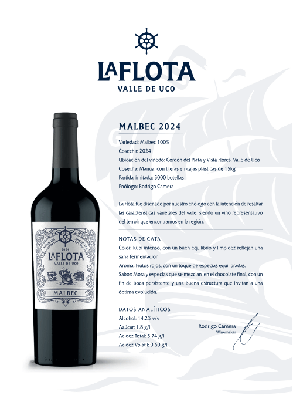
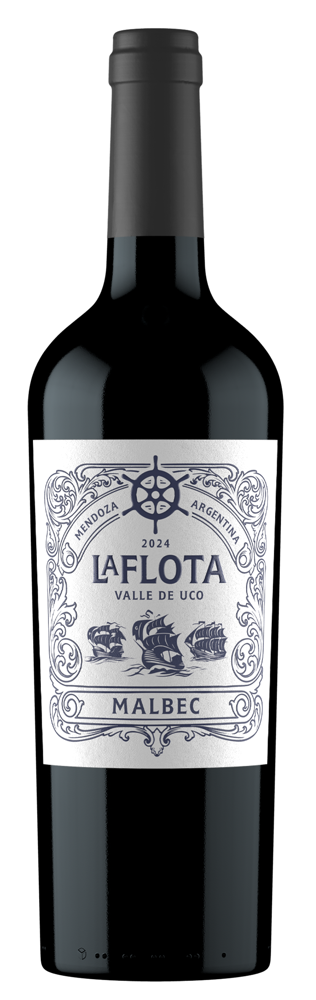

La Flota Malbec 2024
Detalles del Vino
- Variedad: Malbec 100%
- Cosecha: 2024
- Ubicación: Cordón del Plata y Vista Flores, Valle de Uco
- Partida limitada: 5000 botellas
- Enólogo: Rodrigo Camera
Notas de Cata
Color
Rubí intenso, con un buen equilibrio y limpidez reflejan una sana fermentación.
Aroma
Frutos rojos, con un toque de especias equilibradas.
Sabor
Mora y especias que se mezclan en el chocolate final, con un fin de boca persistente y una buena estructura que invitan a una óptima evolución.
Datos Analíticos
14.2%
Alcohol v/v
1.8 g/l
Azúcar
5.74 g/l
Acidez Total
0.60 g/l
Acidez Volátil

La Flota Malbec
Un vino excepcional que representa la esencia del Valle de Uco
- Edición Limitada
- 92 puntos Wine Spectator
- Cosecha 2024
¿Quieres distribuir nuestro producto?
Únete a nuestra red de distribuidores y sé parte de la experiencia La Flota
Contactar para distribución